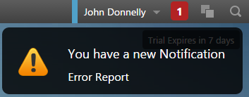
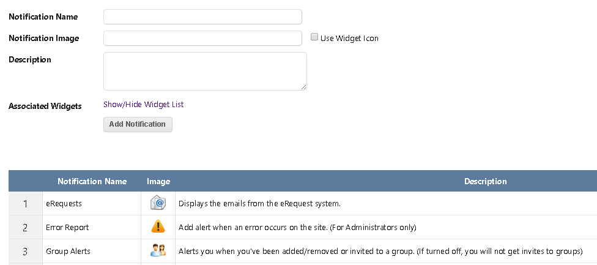
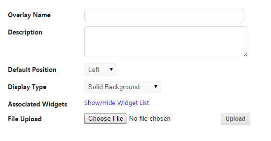

The notification system allows you to notify users of any updates from a given app. There are 3 classes that you will need to call in order to successfully integrate the notification system.

using OpenWSE_Tools.Notifications;
///
/// This initializes the UserNotificationMessages class which you will need to call the method attemptAdd
///
/// The username of the current user
public UserNotificationMessages(string username)
///
/// Determine if a notification can be logged in for a user
///
/// The app id that the notification needs to identify with
/// Message to post
/// Add the flag for the Auto Update System
/// Date posted - Defaults to current date
/// The email address of the current user
public string attemptAdd(string appId, string message, bool addFlag, string date = "")
///
/// Finish adding all the notifications to all the users in the mailTo list
///
/// MailMessage list
/// App Id to associate notification with
/// Message body to post
/// The subject or title of the notification
public static void finishAdd(MailMessage mailTo, string appId, string message, string subject = "")
Sample Code
This is a simple integration that sends every user in the database a notification if enabled
private void AddNotifications() {
// Call the list of users in the database
MembershipUserCollection userlist = Membership.GetAllUsers();
// You will need to specify the app id that the notification is being sent from.
string app_id = "app-messageboard";
string messagebody = "OpenWSE Integration Notification.";
// Initialize the MailMessage
var message = new MailMessage();
foreach (MembershipUser u in userlist) {
// Create a new UserNotificationMessage for the current user in the list
UserNotificationMessages un = new UserNotificationMessages(u.UserName);
// The attemptAdd will determine if the user has the email notification enabled and if so,
// will return the email address of that user.
string email = un.attemptAdd(app_id, messagebody, true);
// Add the email to the MailMessage list
if (!string.IsNullOrEmpty(email)) {
message.To.Add(email);
}
}
// Add, notify, and email all users in the message list
UserNotificationMessages.finishAdd(message, app_id, messagebody);
}
Once you have successfully created your methods for adding notifications, navigate to the Notification Manager under the Settings/Tools tab on the left sidebar.
In order for the app to post the notification, you will need to add it to the list of notifications. Simply give the notification any name, icon (Or use app icon), description, and select the app to associate with. You can have more than 1 app associated with a notification.

The Auto Update system allows you to automatically update a app or the workspace immediately.
using OpenWSE_Tools.AutoUpdates;
// This initializes the UserUpdateFlags class which you will need to call the method addFlag
UserUpdateFlags _uuf = new UserUpdateFlags();
///
/// Adds a flag to the given user to update their current state
///
///
/// The app to update. Use "workspace" to update everything.
/// The groupname. Leave blank if none.
public void addFlag(string username, string appID, string groupname)
///
/// Updates all users with the given app and groupname
///
/// The app to update. Use "workspace" to update everything.
/// The groupname. Leave blank if none.
/// Update the current user
public void addFlag(string appID, string groupname, bool updateForCurrUser = true)
///
/// Gets the update flag for the given user for the workspace
///
/// Any given user in the database
///
public string getFlag(string username)
///
/// Gets the update flag for the given user for a app
///
/// Any given user in the database
/// The app to update. Use "workspace" to update everything.
///
public string getFlag(string username, string appID)
///
/// Gets the update flag for the given user on a given workspace for a given group
///
/// Any given user in the database
/// The app to update. Use "workspace" to update everything.
/// The groupname. Leave blank if none.
///
public string getFlag(string username, string appID, string groupname)
Creating an overlay is a very simple process. All overlays will need to be created as a User Control (.ascx).
Sample Code
This is a simple example using the Rss News Feed Overlay.
When creating the main div of the overlay, make sure you give it a unique Id and set the runat to server.
Sample Code
In the .ascx.cs file of your overlay, make sure you create these private variables at the top before the Page_Load.
private OverlayInitializer _overlayInit;
In the Page_Load method, create a new instance of the _overlayInit.
protected void Page_Load(object sender, EventArgs e)
{
_overlayInit = new OverlayInitializer(string.Empty, "Overlays/RSSFeed_Overlay.ascx");
if (_overlayInit.TryLoadOverlay)
{
LoadOverlay();
}
}
private void LoadOverlay()
{
AppInitializer _appInitializer = new AppInitializer("app-rssfeed", string.Empty, Page);
_appInitializer.LoadScripts_JS(true, "StartRSSFeederOverlay()");
}
Once you have the overlay completed, you are ready to upload it to the Overlay Manager. Navigate to the Overlay Manager under the Settings/Tools tab in the left sidebar.

There are a couple of different ways to create a app. The first is to use the Create App feature under the App Editor. Creating a app through the site is for more simple apps, ones that don't need any major code in the backend.
The best way to do it is to create a new User Control (.ascx) or a new website under Microsoft Visual Studio or equivalent. There are a few css classes you will need to know before beginning creating your app:
The css class below is for the main div of the app:
.main-div-app-bg{background:#FFF;overflow:auto;position:absolute;right:0px;left:0px;top:0px;bottom:0px;z-index:0;-moz-border-radius:5px;-webkit-border-radius:5px;border-radius:5px}
The css classes below are for any modal windows within a User Control style app:
.outside-main-app-div { /* Used for jquery */ }
Sample C# Code for initializing the App - Message Board
private readonly App _apps = new App();
private AppInitializer _appInitializer;
private const string app_id = "app-messageboard";
protected void Page_Load(object sender, EventArgs e)
{
_appInitializer = new AppInitializer(app_id, Page.User.Identity.Name, Page);
_appInitializer.LoadScripts_JS(true, "StartMessageBoard();LoadMessageBoardPosts()");
string script = "$.getScript('//tinymce.cachefly.net/4.1/tinymce.min.js').done(function( script, textStatus ) { LoadTinyMCEControls_Simple();$('#Editor_messageboard_ifr').tooltip({ disabled: true }) });";
ScriptManager.RegisterStartupScript(this, GetType(), Guid.NewGuid().ToString(), script, true);
}
When uploading a new app, use the Upload App feature under the App Editor. You can upload a zip file that contains all your code and dlls.